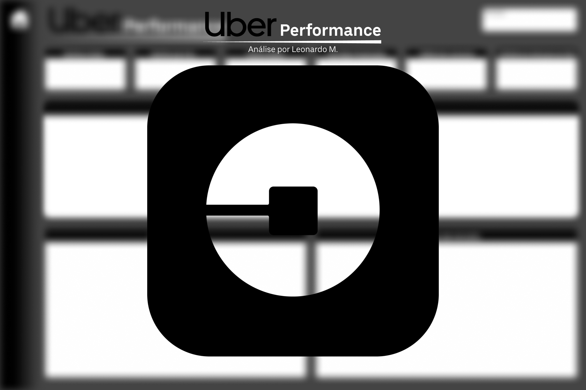
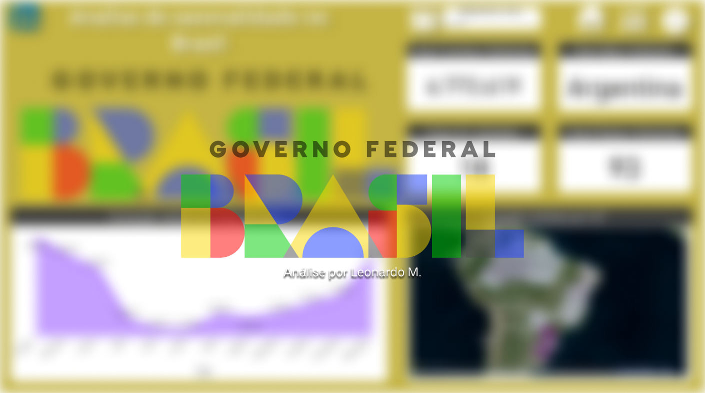

Engenheiro de Dados self-taught com experiência prática construindo infraestruturas de dados do zero em produção. Apaixonado por resolver problemas reais com tecnologia. Busco oportunidades internacionais para construir sistemas de dados robustos e escaláveis.
Experiência
Data Engineer
Amels Conceito · Fortaleza, CE2024 — Presente
Projetei e implantei do zero a arquitetura de dados Bronze/Silver/Gold no BigQuery
Construí pipelines ETL automatizados rodando em produção com Python e Google Cloud
Desenvolvi dashboards interativos em Streamlit e Power BI para análise operacional
Criei formulário de captação de vendas em Next.js 15 com autenticação via Clerk
Desenvolvi o Fast-Leads: sistema WhatsApp de distribuição de leads com round-robin, cache de duplicatas e sentinel 24/7 em Docker + Evolution API
Built the entire data infrastructure from zero for a Hapvida sales operation — ingestion, transformation, and analytics layers, fully automated and running in production.
BronzeRaw ingestion
SilverCleaned & validated
GoldAnalytics ready
Key deliverables
Designed the Bronze/Silver/Gold medallion architecture on BigQuery from scratch
Built automated ETL pipelines in Python, scheduled and running in production
Deployed on Google Cloud with monitoring, alerting and cost optimization
Integrated with Streamlit dashboards for real-time operational visibility
PythonBigQueryGoogle CloudETLSQLDocker
Fast-Leads Bot
WhatsApp lead distribution system
Automated system that receives incoming sales leads and distributes them in real-time to sales agents via WhatsApp — with smart round-robin logic, duplicate filtering, and 24/7 uptime monitoring.
How it works
Round-robin: Distributes leads evenly and fairly across all active agents
Duplicate cache: Detects and filters already-processed leads in real time
24/7 Sentinel: Monitors process health and auto-restarts on failure
Containerized: Runs on Docker + AWS EC2 via Evolution API
PythonDockerEvolution APIAWS EC2WhatsApp
Private repository — planning to commercialize

Uber Performance
Análise completa de performance da Uber, incluindo métricas de viagens, receita, eficiência operacional e insights de negócio para otimização de estratégias.
Power BIDAXAnálise de Performance

Análise de Sazonalidade no Brasil
Dashboard interativo analisando padrões sazonais e tendências temporais em dados brasileiros. Visualização de insights estratégicos com filtros dinâmicos e drill-down por região.